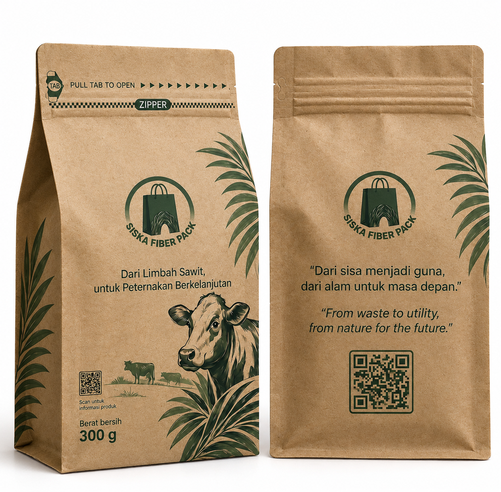

Solusi kemasan ramah lingkungan berbasis Tandan Kosong Kelapa Sawit (TKKS). Diolah secara inovatif menjadi paper pack bernilai tinggi, kuat, dan tahan terhadap kelembapan udara.

Tandan Kosong Kelapa Sawit (TKKS) merupakan limbah lignoselulosa berlimpah. Dengan teknologi pemisahan serat dan pelapisan coating fungsional alami, kami menghadirkan paper pack yang kokoh, lentur, dan tahan air tanpa mengorbankan lingkungan.
Dilumuri lapisan coating fungsional (Pati–CaCO₃) yang membentuk barrier layer tipis untuk meningkatkan hidrofobisitas dan daya tahan dari kelembapan.
Terbuat dari serat selulosa alami dan perekat biopolymer sehingga mudah terurai kembali ke tanah tanpa mencemari lingkungan.
Melalui metode pulping kimia NaOH yang mengoptimalkan ikatan antar-serat (inter-fiber bonding) sehingga struktur lembaran kertas lebih kokoh.
Berikut adalah alur lengkap pengolahan limbah TKKS menjadi produk kemasan paper pack siap pakai:
Proses konversi limbah TKKS menjadi material dasar kemasan diawali dengan pemisahan serat secara mekanis dan perlakuan pendahuluan (pre-treatment). Serat TKKS yang mengandung komponen lignoselulosa tinggi diproses melalui metode pulping kimia sederhana menggunakan larutan Natrium Hidroksida (NaOH). Proses delignifikasi ini bertujuan memutus ikatan lignin dan memperluas permukaan serat selulosa sehingga meningkatkan ikatan antar-serat (inter-fiber bonding) saat pembentukan lembaran kertas. Selanjutnya, adonan pulp dicetak, dipres, dan dikeringkan untuk menghasilkan lembaran kertas komposit berbasis TKKS yang memiliki kelenturan dan kekuatan mekanis dasar untuk dibentuk menjadi struktur paper pack.
Untuk mengatasi kelemahan mendasar kertas berbasis serat alami yang memiliki sifat hidrofilik (mudah menyerap air), permukaan lembaran kertas TKKS dilumuri larutan coating fungsional berupa campuran matriks pati tergelatinisasi dan partikel Kalsium Karbonat (CaCO3). Pelapisan ini membentuk lapisan penahan (barrier layer) tipis pada pori-pori permukaan kertas. Formulasi pati berfungsi sebagai perekat biopolymer yang menutup celah serat, sedangkan partikel (CaCO3) meningkatkan hidrofobisitas dan kerapatan permukaan. Proses ini menghasilkan kemasan paper pack dengan ketahanan yang lebih baik terhadap kelembapan udara dan percikan air tanpa mengurangi sifat biodegradabilitasnya.
Guna melengkapi fungsi kemasan fisik sebagai media komunikasi interaktif, pada permukaan luar paper pack dicetak kode unik berupa QR-Code traceability. Kode digital ini terhubung secara langsung dengan sistem basis data berbasis web yang menyajikan informasi produk secara bilingual (Bahasa Indonesia dan Bahasa Inggris).
Arsitektur informasi yang disajikan saat konsumen memindai QR code meliputi:
a. Identitas & Kualitas Produk
Informasi rinci mengenai spesifikasi, tanggal produksi, dan standar keaslian produk.
b. Ketertelusuran Bahan Baku
Rekam jejak asal-usul bahan agroindustri serta keterkaitannya dengan rantai nilai kelapa sawit.
c. Sistem Bilingual Intuitif
Mendeteksi bahasa bawaan pada perangkat pemindai konsumen secara otomatis.
Jika ada pertanyaan atau tertarik untuk berdiskusi mengenai inovasi kemasan ramah lingkungan dari serat sawit ini, Anda dapat menghubungi kami melalui informasi di bawah ini:
Politeknik Negeri Tanah Laut
Politeknik Negeri Tanah Laut